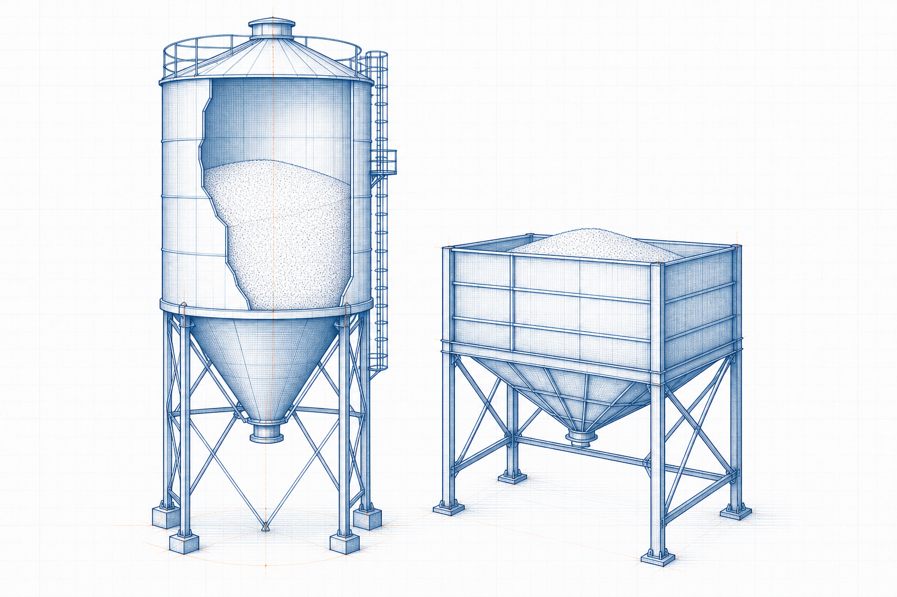

Circular shell
V = πR²H
Volume of the cylindrical section.
 IndustrialCalculation Hub
Search topics, tools, articles...⌕
IndustrialCalculation Hub
Search topics, tools, articles...⌕
Existing engineering calculator
Estimate circular silo or rectangular bunker storage volume, hopper volume and effective capacity.

Select a storage type and enter the existing calculator inputs in millimetres and degrees.
A preset fills the existing angle-of-repose input. Confirm the actual material value for moisture, particle size and handling conditions.
Engineering knowledge
Geometric volume is the enclosed space in a silo or bunker. Usable capacity can be lower because of material slopes, discharge geometry, operating level limits and the properties of the stored bulk solid.
Check material bulk density, flow properties, outlet design and live storage requirements alongside volume.
Explore bulk-material handling →V = πR²H
Volume of the cylindrical section.
h = (R − r) tan α
Angle α is measured from horizontal. Hopper volume is V = πh(R² + Rr + r²) / 3.
V = L × W × H
The existing model adds the simplified hopper volume separately.
No. Multiply a usable volume by the material bulk density only after considering moisture, compaction and operational freeboard.
A material heap and the required operating freeboard occupy space that cannot normally be treated as working storage.